11
What the head of product said
I recommend working with Alina to everyone. She has sharp business thinking — she considers not only her own area of responsibility, but how it affects the whole product and what impact it has on users.
A new in-house admin built to replace two legacy tools — cutting company costs and speeding up content creators' work.
Hyperskill, a JetBrains company, is a learning platform with 200+ content creators publishing courses every week.
hyperskill.orgHyperskill learning platform
Before Hyperstudio, content creators worked in two legacy tools — Cogniterra and a Django Administration panel.
This led to the following:
Content creators flipped between Cogniterra and Django Administration to publish a single topic.
The same metadata had to be filled in twice, in different shapes.
One-on-one sessions with content creators
Sessions with the old Cogniterra and Django tools
Unmoderated recordings of real tasks
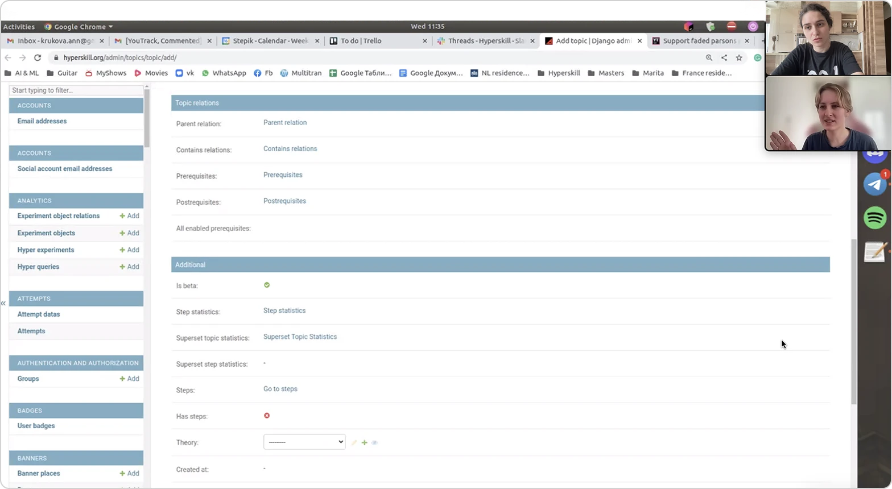
Interview
Together with the team, I redesigned the navigation and explored multiple concepts.
Navigation examples
Concepts
Topic creation
Statistics
Before
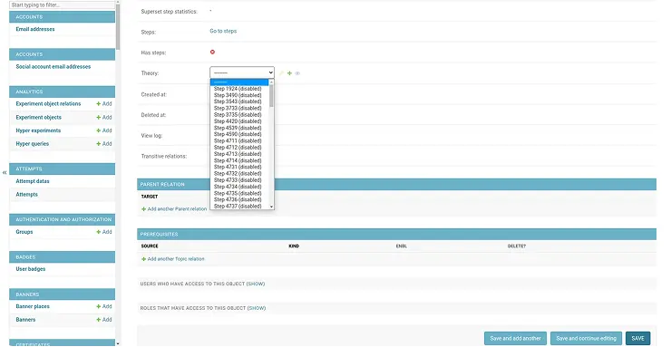
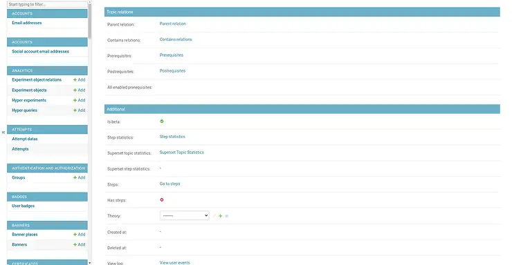
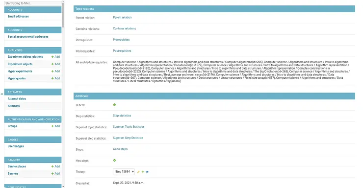
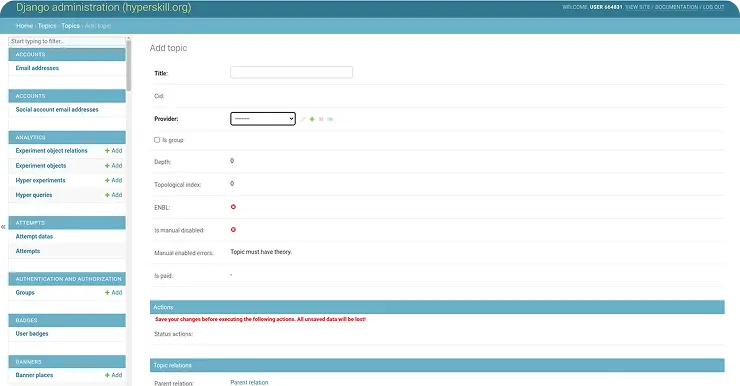
Django Administration panel
After
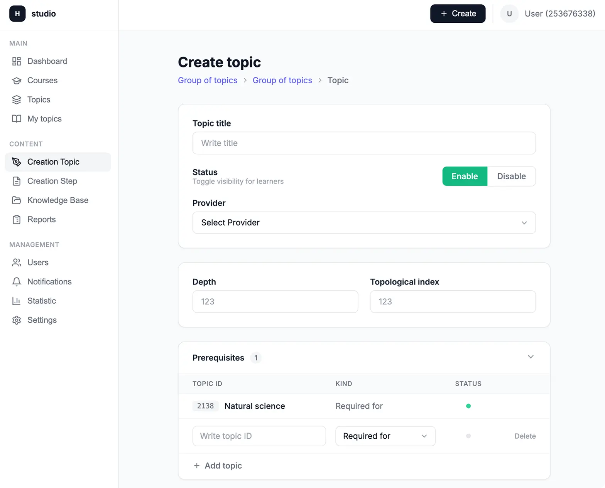
Redesigned Hyperstudio admin
Along the way, we also improved the color palette's accessibility.
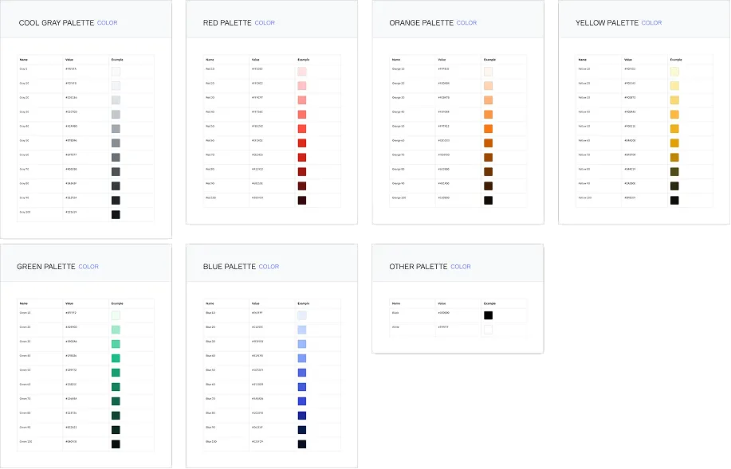
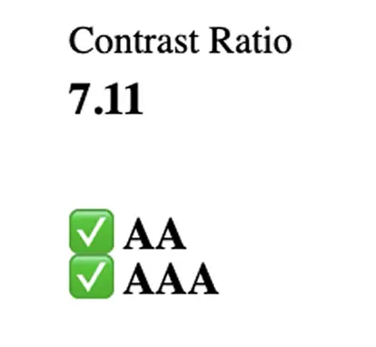
Component documentation was written for the redesigned tokens and patterns.
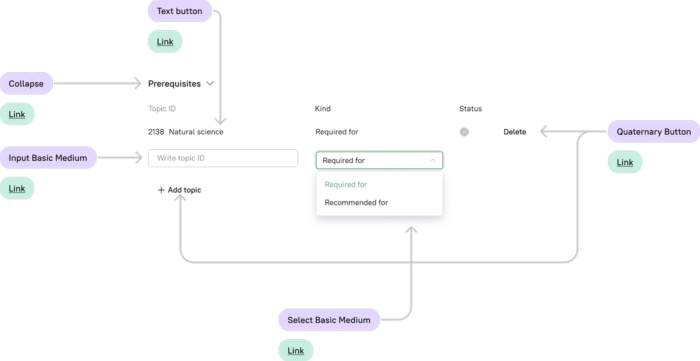
Moderated usability test before launch. All 8 participants completed all 5 core tasks — create a topic, create a group, edit a topic, edit a group, find a topic — without assistance.
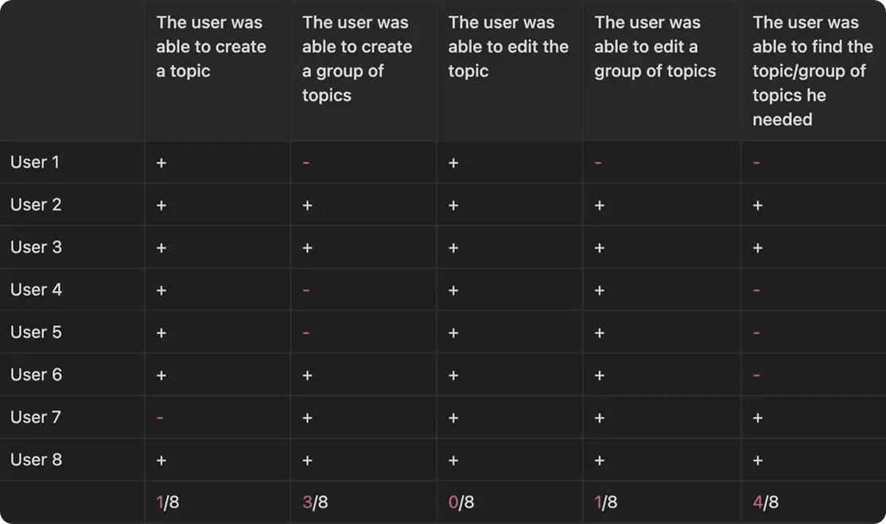
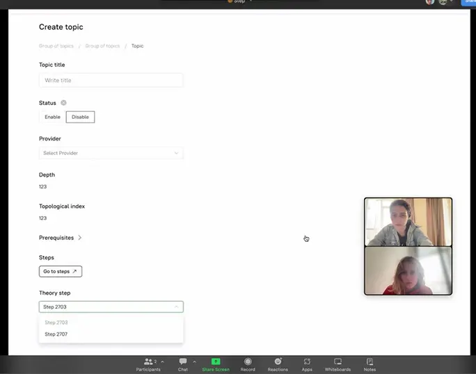
Both retired · subscriptions cancelled
47 min → 34 min, same content creators, comparable topics
Held 8 interviews
Framed a brainstorming session
Created new user flows, layouts, components, prototypes
Organised and held 20 UX tests
Designed ready-for-dev artboards and then tested the results
Created a backlog and shipped iterations
I recommend working with Alina to everyone. She has sharp business thinking — she considers not only her own area of responsibility, but how it affects the whole product and what impact it has on users.